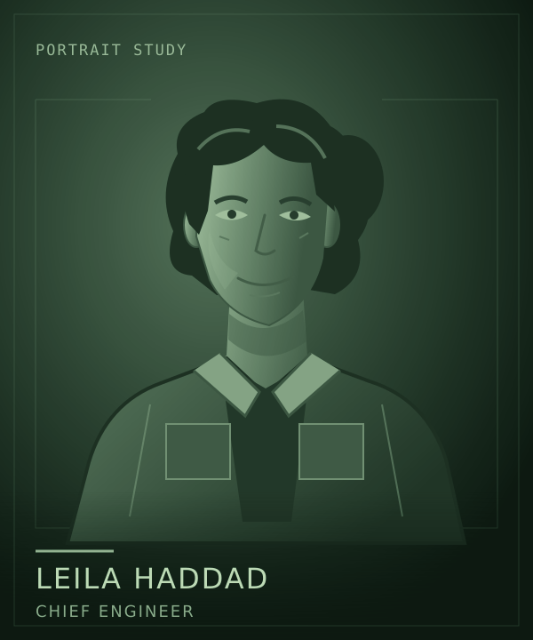

Lore / Leila Haddad
Leila Haddad
 | |
| Portrait concept. Appearance and clothing are not established designs. | |
| Role | Chief engineer |
|---|---|
| Employer | Clearwell Waterworks |
| Outlook | Saturn is home |
{kind=link}
Leila Haddad is the chief engineer aboard Kaveri, Jonah Mercer's workship for Clearwell Waterworks. Leila has made a life at Saturn, not merely found a tolerable posting.
Professional trust makes Leila the captain's closest counterpart. Their expectations beyond the work are less aligned: Jonah plans to leave, while Leila's future is already taking shape here.
Beyond the machinery
At Baikal, Leila is part of a community rather than just the person called when equipment fails. Sociable off duty, Leila runs a fiercely competitive station game night. Work is important, but it is not the whole of life.
That ordinary attachment matters. A station can be an industrial asset on a company's books and still be the place where people have friends, habits, and plans they do not want to abandon.
Trust and different futures
Leila and Jonah do not need the same destination to work well together. Their quiet tension comes from taking each other's intentions seriously, not from a lack of respect.
Leila's settled life also gives the crew a different measure of what is at stake when the station struggles. A repaired plant means continued work; a secure home means something more.